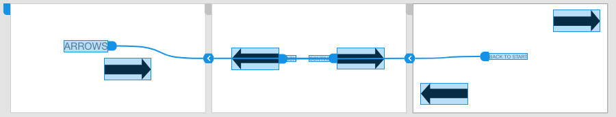

Arrows
What started off as a fairly innocent exercise into looking at how we intuitively respond to icons...
turned into the question: What if icons were used to MISlead indead of direct?
And these initial three pages turned into a maze in cyber space. Try the link yourself before looking at the wireframe. If you get stuck, the wireframe will serve as a map for you!